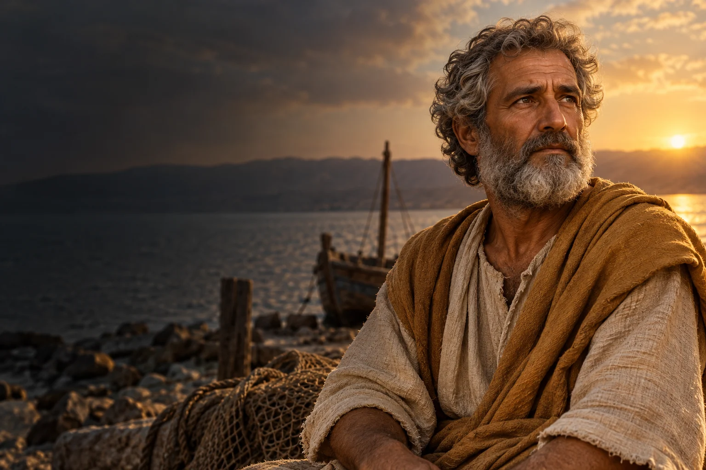

Przyznaj się do błędu
Nazwij swoją pomyłkę i zastanów się, jak możesz naprawić jej skutki.

I wiek
Obchód liturgiczny: 29 czerwca
Apostoł Jezusa i patron Kościoła rzymskiego.
Piotr, wcześniej Szymon, był rybakiem i uczniem Jezusa. Ewangelie i Dzieje Apostolskie ukazują go jako ważnego świadka początków Kościoła.
Poznaj historię jego życia →Ludzka słabość nie musi zamykać drogi do przebaczenia i ponownego podjęcia odpowiedzialności.
Refleksja redakcji W Modlitwie.Szymon rybak zostaje uczniem Jezusa.
Ewangelie przedstawiają jego wyznanie wiary w Jezusa jako Mesjasza.
Piotr zapiera się znajomości z Jezusem.
Podejmuje zadania we wspólnocie uczniów.
W Dziejach Apostolskich występuje jako świadek i głosiciel.
Według tradycji ponosi śmierć męczeńską w Rzymie.
 Współczesne wyobrażenie artystyczne.
Współczesne wyobrażenie artystyczne.Około 3 min czytania · 5 rozdziałów
Szymon, brat Andrzeja, pracował jako rybak. Ewangelie przedstawiają jego powołanie do grona uczniów Jezusa i nowe imię Piotr. Nie podają pewnej daty jego narodzin. Opowieść o jego życiu rozpoczyna się w codziennym świecie pracy i rodziny, zanim pojawią się zadania związane z głoszeniem Ewangelii.
Ewangelie pokazują Piotra w gronie pierwszych uczniów, a jego dawny zawód pozostaje ważnym tłem opowieści. Nie jest to pełna rekonstrukcja jego wcześniejszego życia. Informacje przekazane przez teksty biblijne mają przede wszystkim ukazać jego spotkanie z Jezusem.
Piotr jest jedną z najbardziej rozpoznawalnych postaci wśród Dwunastu. Ewangelie przedstawiają go jako uczestnika wydarzeń z życia Jezusa oraz jako tego, który w imieniu uczniów wyznaje w Nim Mesjasza. Równocześnie pokazują, że zrozumienie drogi Jezusa przychodziło mu stopniowo. Jego reakcje wyrażają zarówno gotowość do działania, jak i trudność przyjęcia zapowiedzi cierpienia.
Piotr występuje w relacjach jako człowiek zdolny do szybkiej odpowiedzi, ale także potrzebujący zrozumienia. Jego historia nie polega na nieprzerwanym paśmie trafnych decyzji. W tekstach biblijnych dojrzewanie ucznia obejmuje pytania i korektę wcześniejszych oczekiwań.
Podczas męki Jezusa Piotr zaparł się znajomości z Nim. Opowieść ta zajmuje ważne miejsce w Ewangeliach, podobnie jak późniejsze spotkania uczniów ze Zmartwychwstałym. W Ewangelii Jana pojawia się rozmowa Jezusa z Piotrem i powierzenie mu troski o owce. W chrześcijańskim odczytaniu nie ukrywa ona słabości ucznia, lecz pokazuje możliwość przebaczenia i ponownego podjęcia odpowiedzialności.
Zaparcie i późniejsze powierzenie misji należą do najbardziej znanych scen jego historii. Można je czytać jako opowieść o odpowiedzialności, która nie wypiera pamięci o błędzie. Ewangelie nie ukrywają trudności, z jakimi mierzyli się pierwsi uczniowie.
Dzieje Apostolskie przedstawiają Piotra jako jednego z głównych świadków życia pierwszej wspólnoty w Jerozolimie. Głosi on zmartwychwstanie i bierze udział w wydarzeniach związanych z przyjmowaniem nowych wierzących. Te teksty nie są pełnym dziennikiem jego podróży; pokazują wybrane epizody ważne dla opowieści o początkach Kościoła.
Dzieje ukazują Piotra w modlitwie, nauczaniu i kontakcie z innymi członkami wspólnoty. W tych relacjach pierwsze pokolenie wierzących uczy się rozumieć zakres swojej misji. Piotr jest jedną z ważnych postaci tej opowieści, obok innych uczniów.
Tradycja Kościoła wiąże posługę i męczeńską śmierć Piotra z Rzymem w I wieku. Nie wszystkie szczegóły jego pobytu i śmierci można ustalić z jednakową pewnością. Kult związano z miejscem pochówku na Watykanie. W Kościele katolickim Piotr jest czczony jako apostoł i pierwszy biskup Rzymu, a 29 czerwca obchodzona jest uroczystość Piotra i Pawła.
Pamięć o Piotrze i Pawle łączy się w rzymskiej tradycji liturgicznej. Rozróżnienie źródeł biblijnych, późniejszych świadectw i tradycji pozwala opowiadać o nim z szacunkiem dla wiary i historycznej niepewności.
Źródła nie pozwalają sporządzić szczegółowej chronologii wszystkich wydarzeń z jego życia. Oś czasu zachowuje zatem kolejność opowieści bez przypisywania niepewnych lat. Wspólnota Kościoła przechowywała pamięć o Piotrze zarówno przez teksty, jak i przez miejsca modlitwy związane z Rzymem.
Nazwij swoją pomyłkę i zastanów się, jak możesz naprawić jej skutki.

Podejmij jeden mały krok w sprawie, do której chcesz wrócić po niepowodzeniu.

Zapytaj bliskich, w jakim zadaniu mogliby dziś liczyć na Twoją pomoc.
Ojcze nasz, któryś jest w niebie, święć się imię Twoje; przyjdź królestwo Twoje; bądź wola Twoja jako w niebie, tak i na ziemi. Chleba naszego powszedniego daj nam dzisiaj; i odpuść nam nasze winy, jako i my odpuszczamy naszym winowajcom; i nie wódź nas na pokuszenie, ale nas zbaw ode złego. Amen.
Tradycyjny tekst modlitwy; utrwalony polski wariant.Ojcze nasz →